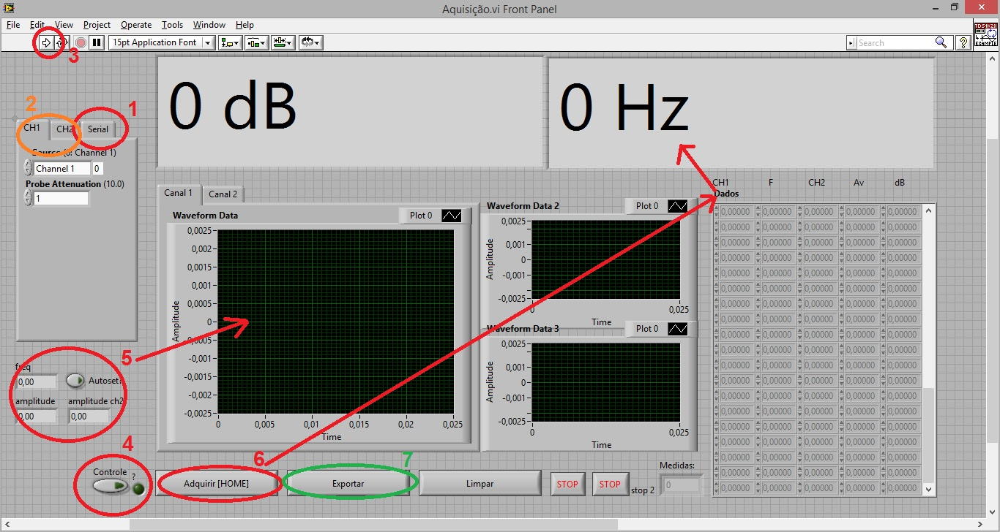

Software de aquisição de dados de osciloscópio Tektronix em LabView
 Em construção
Em construção
Software desenvolvido em LabView 2010 para aquisição de dados de osciloscópios da Tektronix das família TDS 200, 1000 e 2000.
Nota 1: Não foi testado em outras versões do LabView.
Nota 2: Este software foi baseado nos arquivos de exemplo da Tektronix. Link para a documentação.
Instalação
Utilização
- -3. Existem duas versões neste arquivo. A Versão 2 funciona. A Versão 4 precisa de mais testes.
- -2. Com tudo instalado, abra o arquivo /Versão 2 - estável/Aquisição.vi
- -1. O LabView carregará todos os arquivos necessários. Se o LabView não encontrar algum arquivo, ajude-o indicando o caminho do respectivo arquivo.
- 0. Siga os passos da imagem: (link para imagem maior)

- 1. Na guia serial configure os parâmetros da configuração serial. Em geral, é necessário apenas escolher o nome do dispositivo conectado.
Se o osciloscópio não aparecer na lista, abra o utilitário TekVisa Resource Manager e verifique se o osciloscópio aparece lá. Se não aparecer,
tem alguma coisa errada com a instalação dos drivers. Você conectou o cabo USB, né? Se ainda houver algum problema verifique a configuração
do osciloscópio. Geralmente o osciloscópio possui opção para a porta USB traseira ser usada com PC ou com impressora. Escolha PC.
- 2. Configure os canais e sua respectiva atenuação (1x ou 10x).
- 3. Clique em Run.
- 4. Pressione o botão "Controle?".
- 5. Verifique se estes valores correspondem ao valores informados na tela "Measure" do osciloscópio. As formas de onda dos canais deverão
aparecer também.
- 6. Pressione o botão adquirir (é necessário manter o botão pressionado até adquirir (1 ou 2 segundos), ou, é melhor pressionar a tecla HOME
(não é necessário segurar a tecla HOME pressionada)). Um bip soará indicando aquisição completa. Verifique na tabela se os valores foram lidos
corretamente (as vezes algum valor errado pode ser lido, descarte-o futuramente). Além disso, os displays maiores exibirão o ganho em dB e a
frequência da última aquisição. O ganho é calculado supondo que o Canal 1 é a entrada do sistema e o Canal 2 é a saída.
- 7. Varie a frequência do gerador de funções e vá adquirindo. Quando terminar de adquirir os pontos desejados, segure o botão Exportar, até
exportar. Será gerado um arquivo .xls que poderá ser editado com o Excel.
Notas importantes:
- Quando estiver com este programa rodando, o osciloscópio demorará muito para responder aos comandos que lhe forem enviados através dos seus
botões físicos. Se quiser alterar alguma propriedade do osciloscópio, encerre o programa. Nesta versão (bugada) é mais fácil parar o programa no botão
de Stop Debug do LabView (próximo ao botão Run do passo 3).
- Muito importante para uma leitura correta dos parâmetros do sinal: Mantenha pelo menos alguns períodos do sinal visíveis na
Waveform Data (tanto do Canal 1 como do Canal 2) e na escala de amplitude correta, sem distorção do sinal. O LabView calculará amplitude e
frequência com base no que está aparecendo nesta janela.
Changelog
- v4. [Beta]
- v2. Descontinuado.
- v2. [Estável] Adicionados displays grandes de ganho em dB e frequência da última aquisição realizada. Adicionado bip (alerta sonoro) ao completar a aquisição.
- v1. Descontinuado.
TODO
- Problema irritante: Uma vez que o programa assume o controle do osciloscópio os botões físicos do osciloscópio demoram muito para responder.
Para corrigir: tomar o controle do osciloscópio apenas quando se desejar adquirir os dados.
- Outras operações com os sinais, como exibir valor médio, valor eficaz ou até mesmo exibir a FFT do sinal.
Notas
- [1] É necessário cadastro no site da Tektronix. Sim, eles enviam spam.
{kind=link}